Digital Twins
Cognitive and predictive digital twins for wireless systems, real-time network representations, and self-aware channel estimation.
Postdoctoral Fellow · KFUPM • IEEE Senior Member
Building intelligent wireless systems that perceive, predict, reason, act, and adapt through Digital Twins, Physical AI, Agentic AI, and Generative AI.
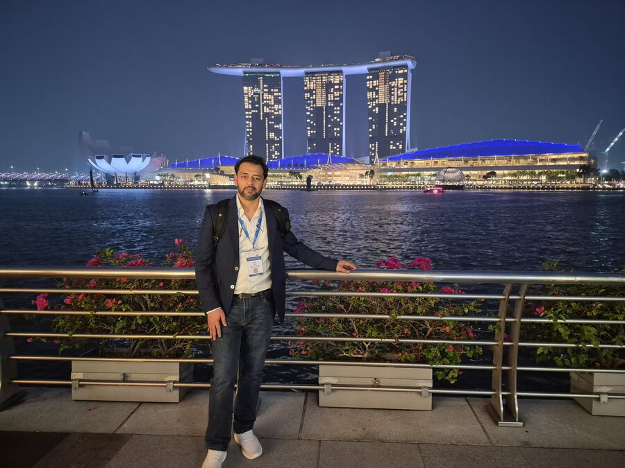
AFAN ALI (Senior Member, IEEE) received the B.Sc. degree in telecommunications engineering from the National University of Computer and Emerging Sciences (NUCES), Islamabad, Pakistan, in 2008, the M.Sc. degree in engineering from Australian National University (ANU), Canberra, Australia, in 2011, and the Ph.D. degree in information and communication engineering from Northwestern Polytechnical University (NWPU), Xi’an, China, in 2018.
From 2009 to 2024, he served at the National Engineering and Scientific Commission (NESCOM), Islamabad, Pakistan, where he progressed through successive research leadership roles. From 2024 to 2025, he was a Postdoctoral Research Fellow in the Communications, Signal Processing, and Networking Center (CoSiNC) at Istanbul Medipol University, Istanbul, Türkiye. He is currently a Postdoctoral Research Fellow at the Interdisciplinary Research Center for Communication Systems and Sensing (IRC-CSS), King Fahd University of Petroleum & Minerals (KFUPM), Saudi Arabia.
He received the Best Paper Award at IEEE IMCEC 2016 (Xi’an, China) and the China Outstanding International Student Award (Shaanxi Province, 2018). His research lies at the intersection of wireless communications, active and predictive digital twins, and Generative and Agentic AI for 6G networks.
From intelligent network representations to timely decisions in dynamic physical environments.
Cognitive and predictive digital twins for wireless systems, real-time network representations, and self-aware channel estimation.
Closed-loop sensing, reasoning, and action that accounts for mobility, physical dynamics, and decision latency.
Autonomous, decision-centric agents for adaptive network control, predictive handover, and intelligent sensing.
Beyond-5G/6G, integrated sensing and communications, NTN, channel estimation, and physical-layer intelligence.
Generative and adversarial learning for proactive interference management, secure communications, and future-state prediction.
Resource-aware learning, TinyML, robust signal classification, and reliable AI in constrained systems.
Contributing to KFUPM-sponsored research (SAR 600,000), alongside work on decision-centric predictive sensing, cognitive digital twins, and autonomous 6G networks.
Selected journal articles, accepted papers, and manuscripts under review.
IEEE Transactions on Communications · 74 · 9592–9607
Open paper ↗IEEE Transactions on Green Communications and Networking · 10 · 1565–1577
Open paper ↗IEEE Wireless Communications Letters · 15 · 66–70
Open paper ↗Internet Technology Letters · 8(5) · e70060
Open paper ↗IEEE Signal Processing Letters · 24(11) · 1626–1630
Open paper ↗IEEE Communications Letters · 21(10) · 2162–2165
Open paper ↗Digital Signal Processing · 71 · 108–116
Open paper ↗Physical Communication · 25 · 75–84
Open paper ↗Neurocomputing · 238 · 168–178
Open paper ↗International Journal of Computer Theory and Engineering · 9(5) · 398–401
Open paper ↗IEEE Open Journal of the Communications Society
Open paper ↗Submitted to IEEE Wireless Communications
Open paper ↗Submitted to IEEE Wireless Communications Letters
Open paper ↗Submitted to IEEE Communications Magazine
Open paper ↗Submitted to IEEE Transactions on Wireless Communications
Open paper ↗Under review
Open paper ↗IEEE PIMRC · Singapore · Accepted
Open paper ↗Computing Conference · London
Open paper ↗IEEE IMCEC · Xi’an · Best Paper Award
Open paper ↗IRC-CSS, King Fahd University of Petroleum & Minerals · Saudi Arabia
CoSiNC, Istanbul Medipol University · Türkiye
NESCOM · Pakistan — Assistant Manager, Manager, then General Manager Research (2021–2024)
Institute of Space Technology · Pakistan
Northwestern Polytechnical University · China
Australian National University · Australia
FAST–National University of Computer and Emerging Sciences · Pakistan
IEEE Communications Society Travel Grant · PIMRC 2026
China Outstanding International Student Award · 2018
Best Paper Award · IEEE IMCEC 2016
NICTA Society Australian Award · 2010
Selected moments from international conferences, research events, and academic milestones. Click any photograph to view it in full size.
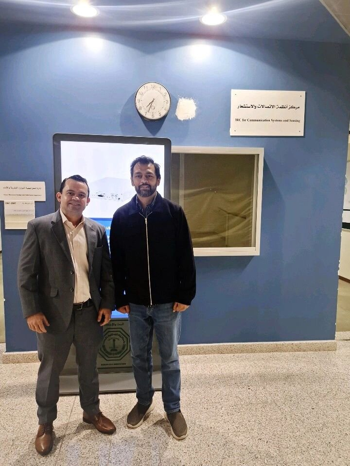
Joined the Interdisciplinary Research Center for Communication Systems and Sensing (IRC-CSS) at King Fahd University of Petroleum & Minerals as a Postdoctoral Fellow.
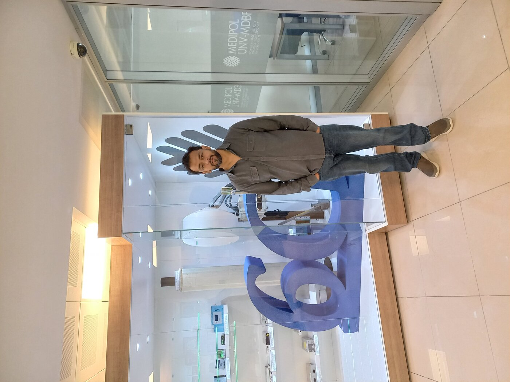
Postdoctoral Research Fellow at the Communications, Signal Processing and Networking Center (CoSinC), School of Engineering and Natural Sciences, Istanbul Medipol University. Continued research on digital twins, agentic AI and next-generation wireless systems during this period in Istanbul.
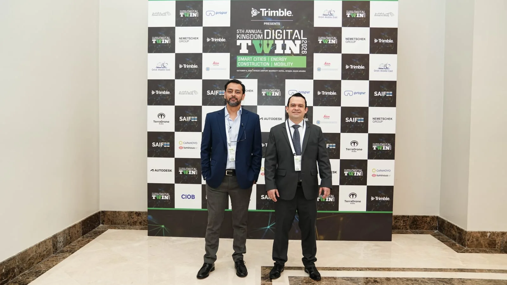
Participated in the summit focused on Smart Cities, Energy, Construction and Mobility, with discussions on predictive digital twins and generative AI for wireless-network control.
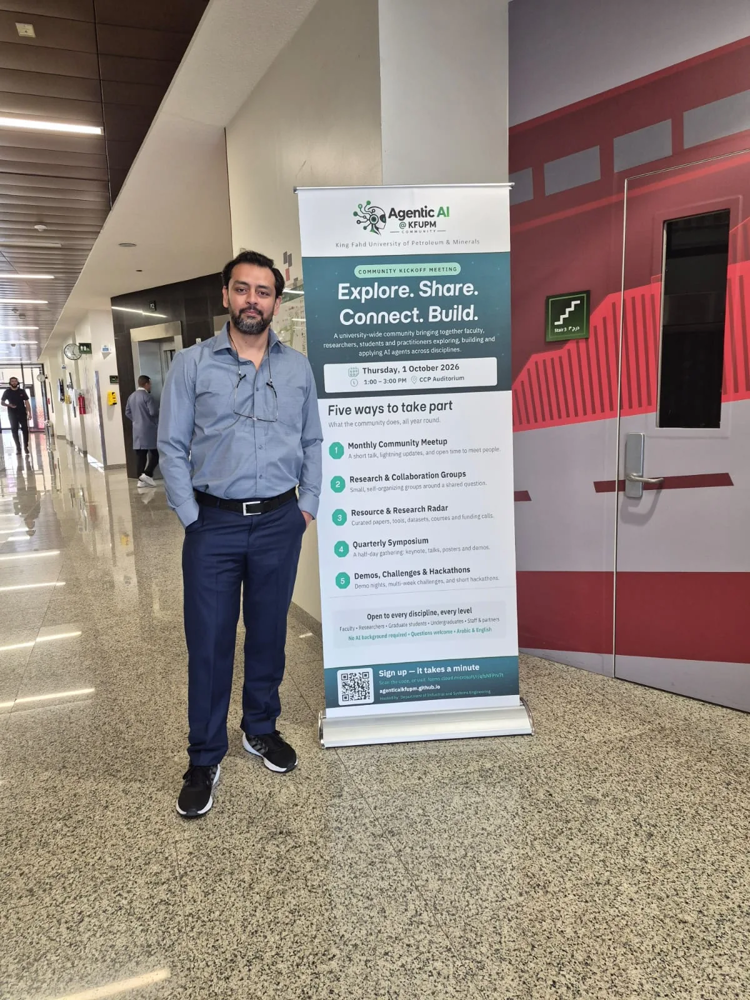
University-wide launch of the Agentic AI @ KFUPM community, bringing together faculty, researchers and students to explore autonomous AI agents across disciplines.
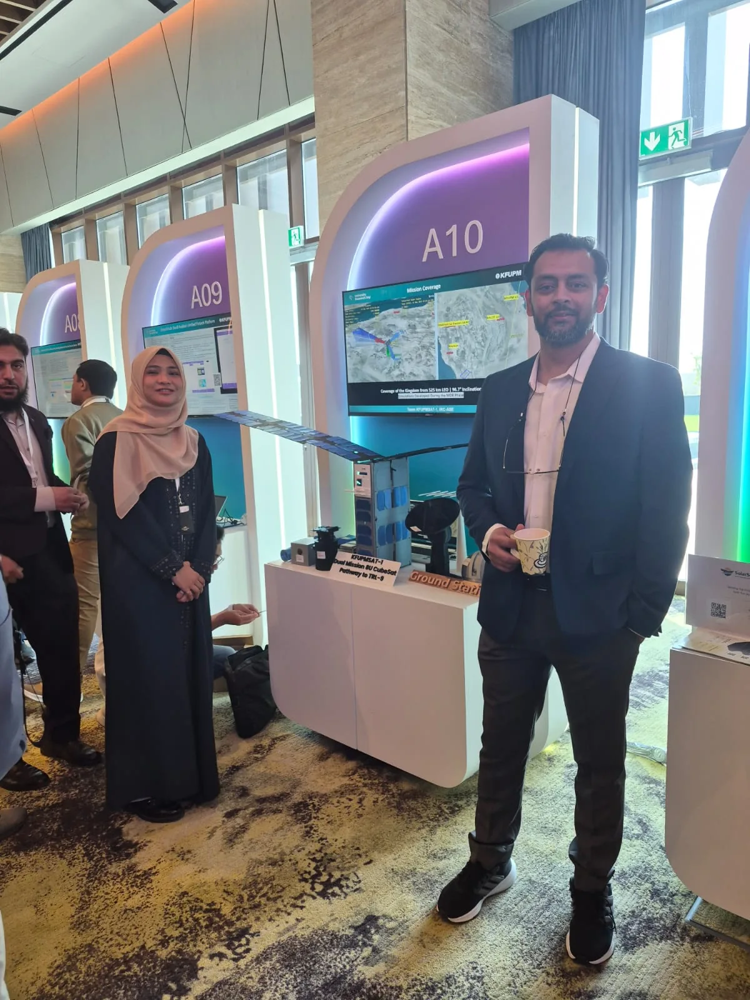
University Research Day featuring emerging technologies and application-oriented prototypes, including work from IRC-CSS, satellite systems and smart mobility.
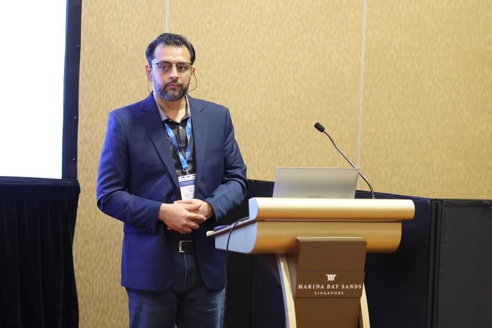
Presented research on GenAI-Enhanced Digital Twins for Predictive Interference Management in Ultra-Dense Networks at the IEEE International Symposium on Personal, Indoor and Mobile Radio Communications.
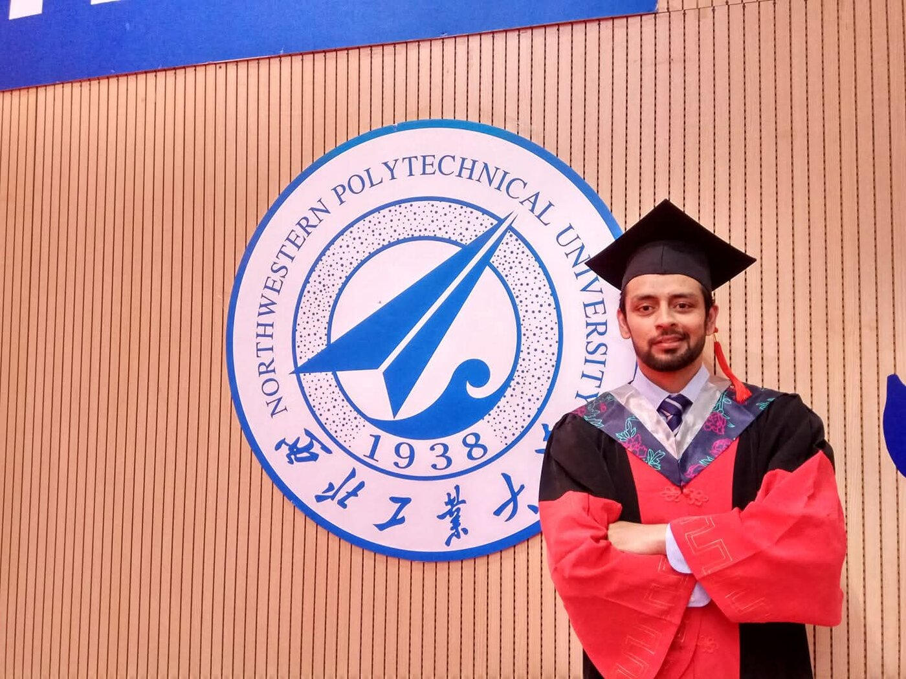
Awarded the Ph.D. in Information and Communication Engineering. The ceremony marked the completion of doctoral research on advanced signal processing and machine-learning techniques for wireless communications.
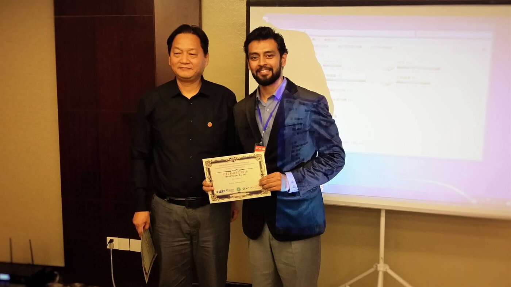
Received the Best Paper Award at the IEEE International Conference on Information Management, Communication Engineering and Electronic Commerce for research on higher-order statistics based modulation classification.
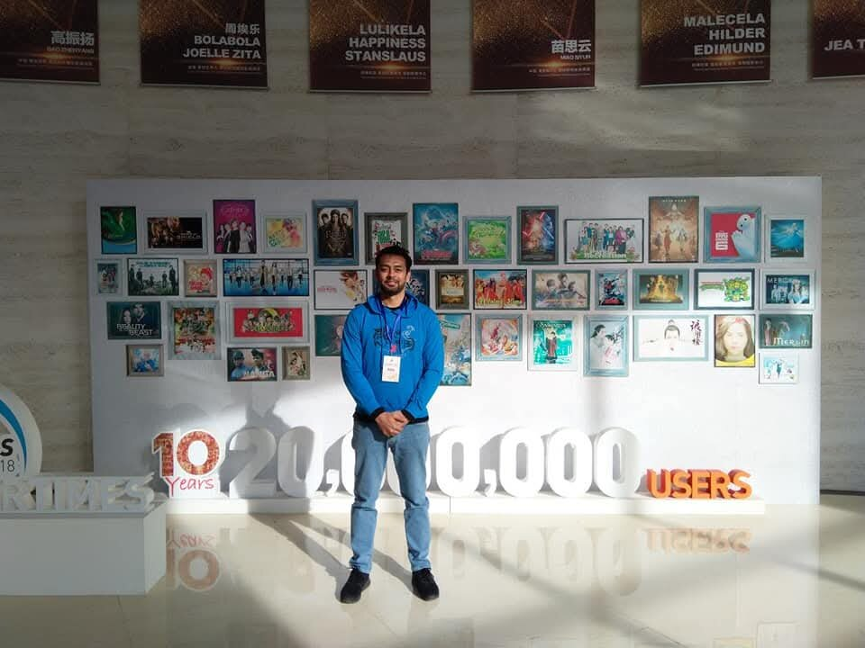
Recognized as an outstanding international student during doctoral studies at Northwestern Polytechnical University for academic excellence and contributions within the province’s higher-education community.
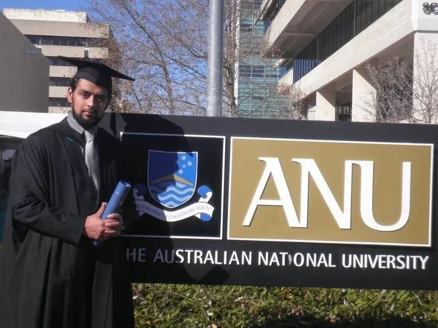
Graduated with a Master’s degree in Communication Engineering from the Australian National University, building the foundation for later research in intelligent wireless networks.
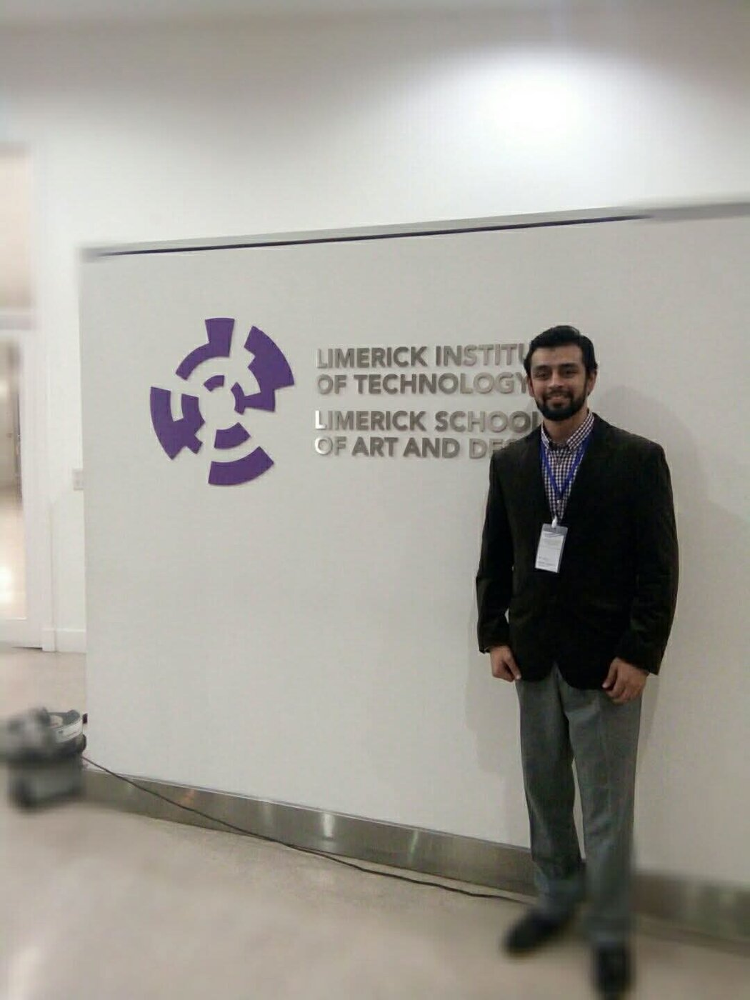
Participated in an international conference held at the Limerick Institute of Technology / Limerick School of Art and Design, engaging with researchers from Europe on communications and related technologies.
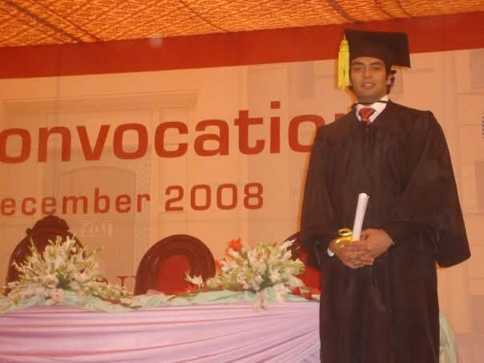
Graduated with a Bachelor’s degree in Telecommunication Engineering from the National University of Computer and Emerging Sciences (FAST-NU / NUCES), launching a career spanning academia and industry research.
Open to academic collaborations in Digital Twins, Physical AI, Agentic AI, Generative AI, and next-generation wireless networks.
afan.ali@kfupm.edu.sa ↗